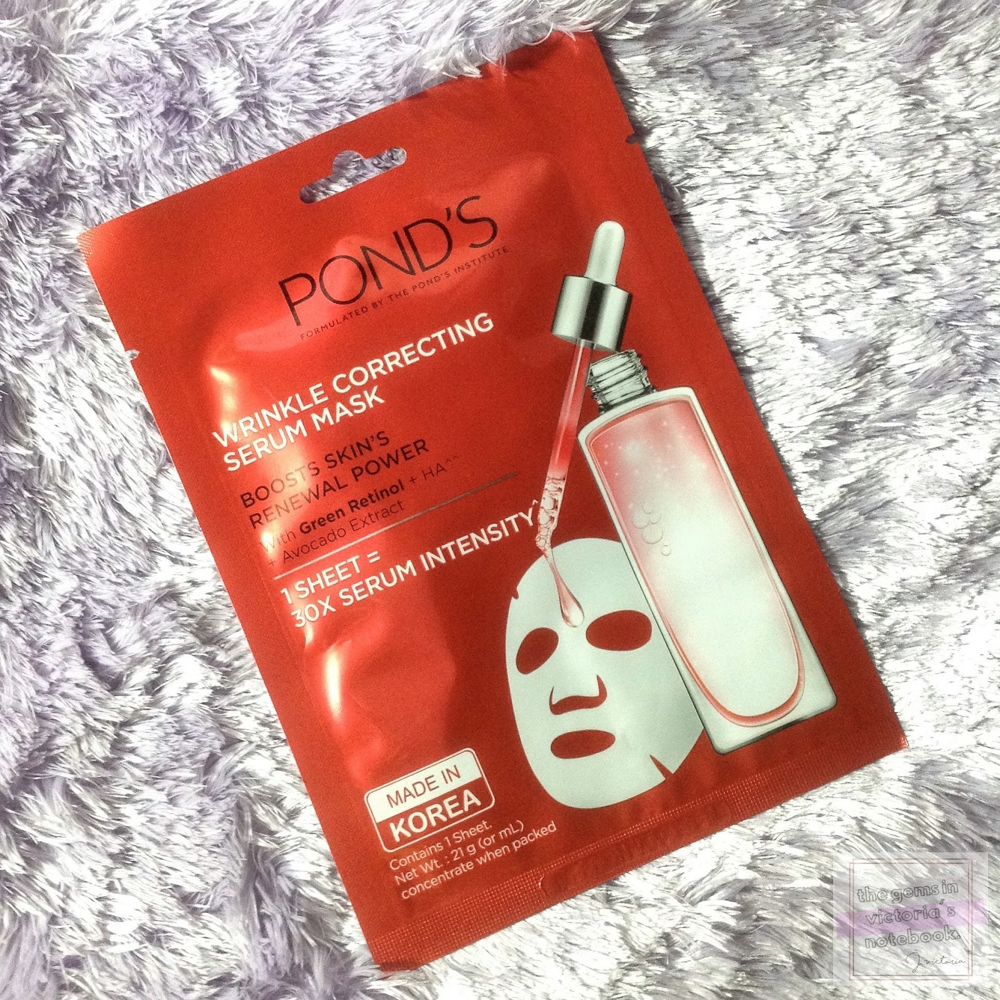

This mask hydrates and strengthens to reveal smoother, plumper rejuvenated skin. 1 sheet =30X Serum intensity.
You Can Get The Pondz For
R200

Recapture the youthful radiance of your skin in just 2 weeks with Pond's Age Miracle, formulated with intelligent pro-cell complex formulated a combination of 6 powerful anti-ageing bio-actives. The powerful combination of Retinol, the golden standard in Anti-Ageing and Retinol boosters, works deep inside the layers of skin to reduce lines, wrinkles and age spots, resulting in smoother, younger-looking skin on the outside in just 2 weeks. Look up to 10 years younger.
What The Product Will Do For You
1. POND’S Wrinkle Correcting Serum Mask is a convenient peel off sheet face mask to help boost skin hydration
2. An intense serum mask that moisturises and refreshes your skin
3. This Pond's intense treatment mask is equivalent to 30 times usage intensity of POND's Age Miracle double action serum, one sheet mask contains the glycerine equals to 30 times usage of Pond's Age Miracle Double Action Serum